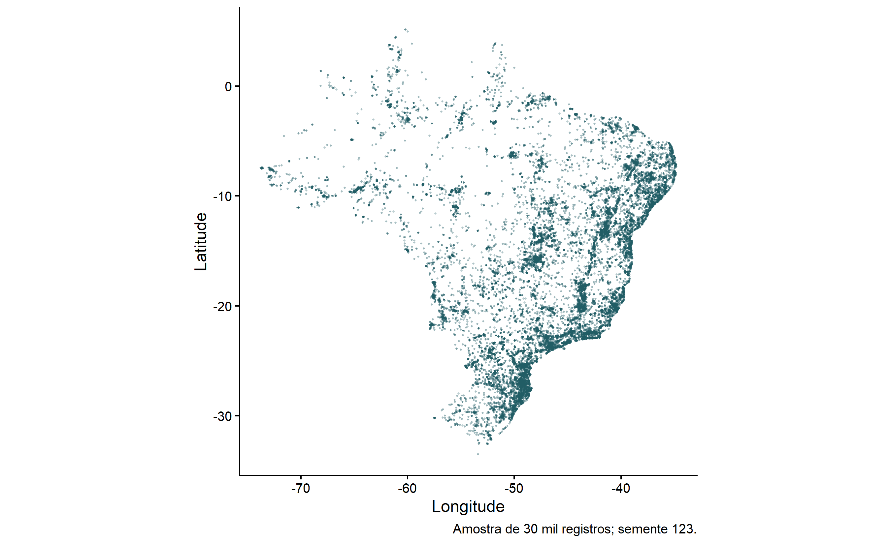

Nesta etapa é realizada uma limpeza complementar da base produzida na etapa anterior. O foco está nos problemas identificados pelo GBIF, na localização dos registros dentro do Brasil e em alguns problemas taxonômicos.
O resultado principal é Br_01_clean2.csv, que será
utilizado nas análises posteriores.
library(data.table)
library(dplyr)
library(stringr)
library(sf)
library(countrycode)A matriz utilizada aqui é o resultado da depuração inicial.
Br_01 <- fread(
entrada("resultados/Br_01_clean_inicial.csv"),
encoding = "UTF-8",
na.strings = c("", "NA", "NULL", "null")
)issues) registrados pelo GBIFPrimeiro observamos quais issues ainda estão presentes
na matriz.
issue_presentes <- Br_01[
!is.na(issue) & issue != "",
unique(unlist(strsplit(issue, "[;,]")))
]
cat("Issues encontrados em Br_01:\n")
print(sort(issue_presentes))A lista de exclusão do procedimento original foi preservada. A comparação agora exige códigos completos, separados por vírgula ou ponto e vírgula. Os códigos abreviados não são traduzidos automaticamente para os nomes extensos encontrados em exportações recentes do GBIF; ausência de correspondência não comprova ausência de problemas.
issues_graves <- c(
"cdiv",
"cdout",
"cdrepf",
"cdreps",
"preneglat",
"preneglon",
"preswcd",
"cdpi",
"cdumi"
)
patron_issues <- paste(
issues_graves,
collapse = "|"
)
Br_01_clean2 <- Br_01[
is.na(issue) |
issue == "" |
!grepl(
paste0("(^|[;,])(", patron_issues, ")([;,]|$)"),
issue
)
]
cat(
"Registros após revisar os issues:",
nrow(Br_01_clean2),
"\n"
)Como a análise está restrita ao Brasil, os registros com coordenadas são comparados com o polígono do país.
brasil <- rnaturalearth::ne_countries(
country = "Brazil",
scale = "medium",
returnclass = "sf"
)
idx_coord <- which(
!is.na(Br_01_clean2$decimalLatitude) &
!is.na(Br_01_clean2$decimalLongitude)
)
pontos <- sf::st_as_sf(
Br_01_clean2[idx_coord],
coords = c(
"decimalLongitude",
"decimalLatitude"
),
crs = 4326,
remove = FALSE
)
dentro <- sf::st_within(
pontos,
brasil,
sparse = FALSE
)
dentro <- apply(
dentro,
1,
any
)
manter_brasil <- rep(FALSE, nrow(Br_01_clean2))
manter_brasil[idx_coord] <- dentro
Br_01_clean2 <- Br_01_clean2[
manter_brasil
]
cat(
"Registros após o filtro espacial:",
nrow(Br_01_clean2),
"\n"
)Esta etapa é apenas uma verificação. O filtro espacial anterior é mantido como referência principal para a localização geográfica.
if("countryCode" %in% names(Br_01_clean2)){
paises_problematicos <- Br_01_clean2[
!is.na(countryCode) &
countryCode != "" &
countryCode != "BR"
]
cat(
"Registros com countryCode diferente de BR:",
nrow(paises_problematicos),
"\n"
)
}São eliminados os registros que apresentam os problemas taxonômicos definidos abaixo.
issues_taxonomicos <- c(
"txmatnon",
"txmathi",
"taxstinv",
"rankinv",
"ns",
"bbmn"
)
patron_tax <- paste(
issues_taxonomicos,
collapse = "|"
)
Br_01_clean2 <- Br_01_clean2[
is.na(issue) |
issue == "" |
!grepl(
paste0("(^|[;,])(", patron_tax, ")([;,]|$)"),
issue
)
]fwrite(
Br_01_clean2,
"resultados/Br_01_clean2.csv"
)O mapa apresenta uma amostra de até 150 mil registros após a limpeza complementar; a matriz salva conserva todos os registros retidos.
library(sf)
library(ggplot2)
library(rnaturalearth)
library(geobr)
library(ggspatial)
brasil <- ne_countries(
country = "Brazil",
scale = "medium",
returnclass = "sf"
)
# Estados de Brasil
estados <- geobr::read_state(year = 2020, simplified = TRUE)
# Amostra reprodutível apenas para visualização
set.seed(123)
ocorrencias_sf <- st_as_sf(
dplyr::slice_sample(Br_01_clean2, n = min(150000, nrow(Br_01_clean2))),
coords = c("decimalLongitude", "decimalLatitude"),
crs = 4326,
remove = FALSE
)
# Mapa
ggplot() +
geom_sf(
data = brasil,
fill = "grey95",
color = "grey50",
linewidth = 0.5
) +
geom_sf(
data = estados,
fill = NA,
color = "grey75",
linewidth = 0.25
) +
geom_sf(
data = ocorrencias_sf,
color = "#1f4e79",
size = 0.12,
alpha = 0.12
) +
coord_sf(
xlim = c(-75, -34),
ylim = c(-34, 6),
expand = FALSE
) +
annotation_scale(location = "bl", width_hint = 0.25) +
annotation_north_arrow(
location = "br",
which_north = "true",
style = north_arrow_fancy_orienteering
) +
labs(
title = "Distribuição espacial dos registros no Brasil",
x = NULL,
y = NULL
) +
theme_minimal(base_size = 12) +
theme(
panel.grid.major = element_line(color = "grey88", linewidth = 0.2),
panel.background = element_rect(fill = "aliceblue", color = NA),
plot.background = element_rect(fill = "white", color = NA),
axis.text = element_text(color = "grey30"),
plot.title = element_text(face = "bold", size = 14),
plot.subtitle = element_text(size = 11, color = "grey30"),
legend.position = "none"
)Ao final, a matriz utilizada nas análises seguintes é:
resultados/Br_01_clean2.csv
A etapa seguinte utiliza esse arquivo para associar cada ocorrência a um bioma brasileiro e realizar as primeiras análises exploratórias.
| Registros | Especies_identificadas |
|---|---|
| 2949076 | 36600 |
| Tipo de registro | Registros |
|---|---|
| PRESERVED_SPECIMEN | 2539966 |
| MACHINE_OBSERVATION | 295 |
| HUMAN_OBSERVATION | 363364 |
| MATERIAL_SAMPLE | 14114 |
| MATERIAL_CITATION | 2316 |
| OCCURRENCE | 26136 |
| LIVING_SPECIMEN | 18 |
| OBSERVATION | 2838 |
| FOSSIL_SPECIMEN | 29 |
